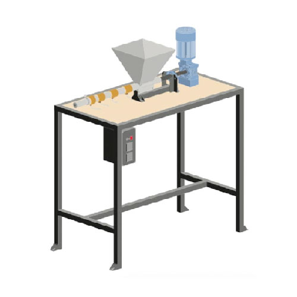

Build an Extrusion Machine
Build an Extrusion Machine
What is this machine?
Extrusion is a continuous process where shredded plastic enters the hopper, heated and pressed with a screw through a long barrel. The output is a steady line of plastic, and as this machine runs continuously, if you have enough plastic and a well-streamlined process you could (technically) be recycling 24/7 🎉
Pro-tip: to increase efficiency and diversity we recommend to upgrade the extruder with the compression screw.
With this machine you can create filament (challenging but doable), granulate or get creative and spin this continuous line around a mould, and is great for educational purposes as the process is very straightforward and easy to understand. When plastic is extruded it nicely blends different colours together and produces a homogenous and clean colour.
📓 Technical information
| 📓 Type | Extrusion Machine |
|---|---|
| 💎 Version | 2.0 |
| 💰 Price new material in NL | +/- €500 + motor |
| 💰 Price scrap material in NL | +/- €200 |
| ⚖️ Weight | 35 kg |
| 📦 Dimensions | 500 x 1020 x 1120 mm |
| ⚙️ Screw size | 26 x 600 mm wood auger |
| ⏱ Max running time | 4H/Day |
| 🔌 Voltage | 380V |
| ⚡️ AMP | 5.8A |
| ♻️ Input Flake Size | Medium, Small |
| - Nominal Power | 1.5 kW minimum. |
| - Nominal Torque | 109 Nm |
| - Output Speed | 40-140 r/min |

🌐 3D Model
🛠 Required machinery & skills
| Build Extrusion | Machines needed | Skills needed |
|---|---|---|
|  | - Drill press - Welding machine (not specific) - Angle grinder | - Welding (intermediate) - Assembling (intermediate) - Electronics (intermediate) |
⚡️ Electronic box
Explanation of the electric components inside this machine. More information and schematics can be found in the download-kit.
- PID Controller: the brains of the machine where you can set your desired temperatures. It will send power to the heaters until PV (point variable) matches the SV (set value). It does this using readings from the thermocouple and the SSR.
- SSR: the Solid State Relay is an electronic ‘switch’ that opens and closes depending on the signal it receives (from the PID).
- Thermocouple: basically a thermometer.
- Band heater: heating element that fits around a pipe.
- Power switch: mechanical switch.
- LED indicator: LED that will shine with power (often found with Power switch).
- Power cable: common household power cable.
Pro-tip: Here is a good forum topic about electronics
🛠 Tips & tricks while making
- Alignment of the motor and couplings is key, any misalignment could cause future wear and tear. To do this we recommend drilling holes into the plates and attaching them to the motor. Align and then weld the plate in position to the frame.
- Any bolts used should be used in tandem with locking nuts to prevent them from loosening over time.
- When choosing a gearing system bear in mind that the extrusion screw applies lateral pressure into the gearbox. Avoid using linear systems that don't have a back plate such as motors found in garden mulchers.
- Choose bearings that can handle directional load (such as a tapered bearing)
- Installing a VFD with this machine makes using it a dream.
♻️ Input & Output
Type: HDPE, LDPE, PP, PS
Flake size: <5mm
Output: Depends on nozzle, ±5 kg/h
⚙️ Run & maintain
You can set the temperature from the controllers on the electronic box. The heating elements are wired into two groups - nozzle and barrel are marked on top of the controllers. The first three elements (barrel) should be set at a slightly lower temperature than the last one near the nozzle. This is to make sure the plastic gets a last boost of heat right before it comes out. Below you can see a diagram with the best settings for this machine based on our experiments (tip: you could your own to see what works best for you). The optimal temperatures below are drawn using a motor turning at 70rmp. If your motor turns faster you would need higher temperature as the plastic flows faster through the barrel and has less time to melt, vice-versa if the motor is slower.
Pro-tip: Make a stand for your output/mould to stabilize it and make your life easier.
How to operate the extruder
- Heat the machine to the desired temperature.
- Wait 20 minutes.
- Add desired plastic in the hopper.
- Turn on the motor.
- The material that comes out of the machine for the first 2 minutes is to clean the machine from old plastics from previous sessions.
- The machine is now ready for production!
🔓 Troubleshooting
PID settings for K-Type - Change to J-Type (Ask vincent)
Machine Jams? Change the poles in motor wiring to reverse.
The most common problem with the extrusion is having an output that is not uniform. There are a few reasons why this could happen:
- The plastic can be dirty, clogging the nozzle and making it difficult for the plastic to get out.
- Two different types of plastic are mixed together, common causes for this can be contamination in the sorting stage or plastic left in the barrel from previous activity. In this case, one plastic type melts while the other doesn’t obstructing the plastic flowing through the nozzle.
- The temperature is not high enough and the plastic in the barrel does not manage to fully melt.
- You can solve the above problems by checking the integrity and purity of the raw material or by raising the temperature. Upon adjusting your process make sure to empty the entire barrel before attempting to make a new product
🌦 Pros & cons
| Pros | Cons |
|---|---|
| Continuous output | Complex to build |
| Relatively cheap | Not built to run long |
| Large products possible | Output is low |
| User Friendly |
🌎 Built by the community


🙌 Useful Links
- Shredder & Extruder - Industrial Electronics
- Extrusion Beam Tests
- V4 Beam Production
- V4 Extrusion Products
- V4 Tubes & Profiles
- V4 Extrusion Moulds
- How-to: Beam Mould
- How-to: Flat Nozzle
- How-to: Different Textures
- How-to: Bench
- How-to: Shelf
- How-to: Glass Beams
If you need help, have questions or looking for someone to talk to in your lonely cold workspace. Head to the #build channel on Discord. Here we talk nerdy about machines.